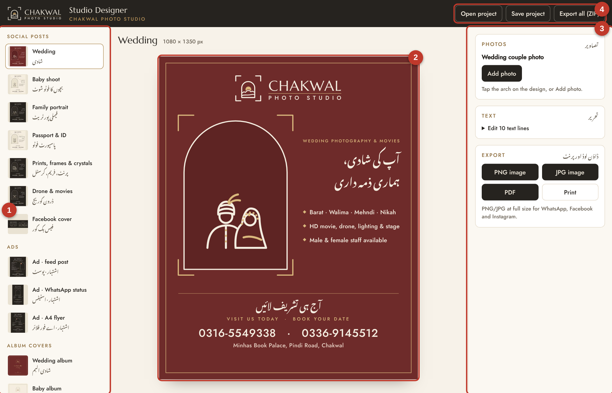
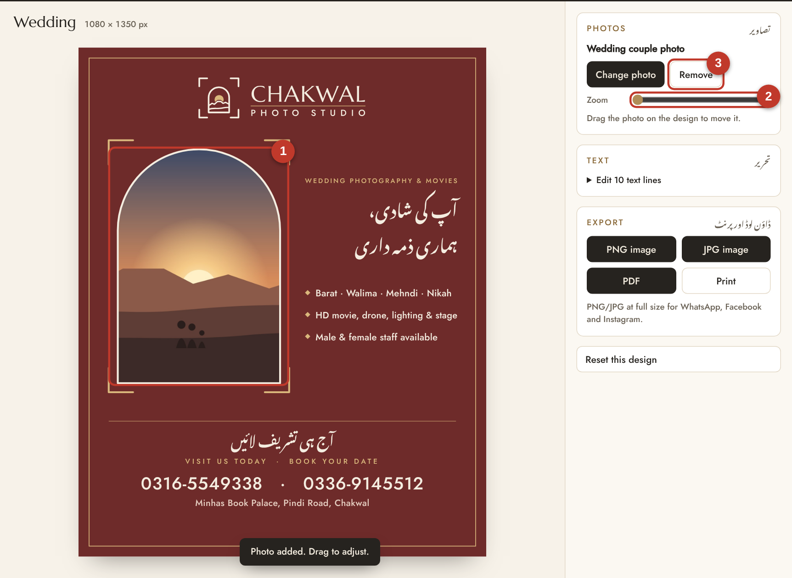
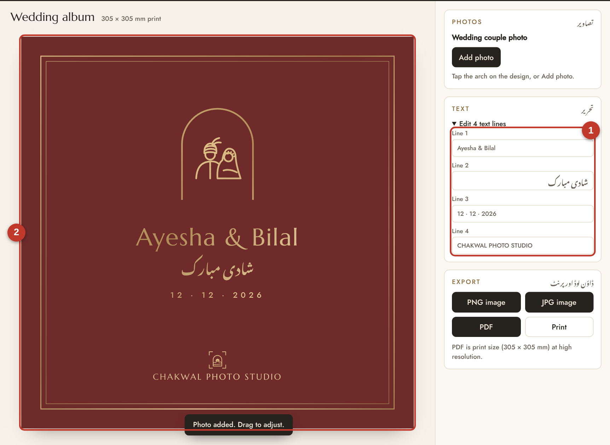
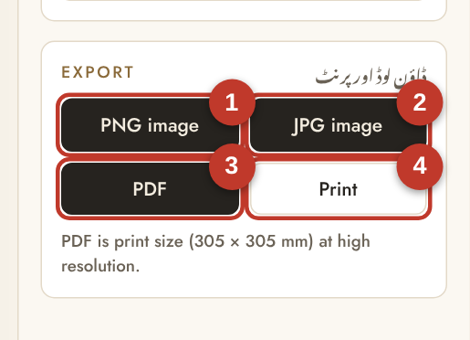
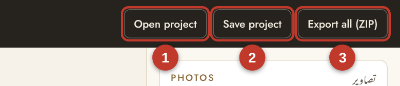

USER GUIDE · URDU
Chakwal Studio Designer
چکوال اسٹوڈیو ڈیزائنر
استعمال کا آسان طریقہ
یہ ایپ چکوال فوٹو اسٹوڈیو کے تمام ڈیزائن ایک جگہ رکھتی ہے۔ اپنی تصویر لگائیں، نام اور تحریر بدلیں، اور تیار فائل واٹس ایپ، فیس بک یا پرنٹنگ پریس کو بھیج دیں۔
- اکیس تیار ڈیزائن: پوسٹس، اشتہار، البم کور، بزنس کارڈ، ڈی پی، سائن بورڈ، آرڈر سلپ
- اپنی تصویر لگائیں، کھینچ کر جگہ اور سائز درست کریں
- اردو اور انگریزی تحریر بدلیں
- تصویر، پی ڈی ایف یا زِپ فائل بنائیں، یا سیدھا پرنٹ کریں
- انٹرنیٹ کے بغیر بھی چلتی ہے
ایپ کھولنا1
تحریر بدلنا4
ایپ کا تعارف2
ڈاؤن لوڈ اور پرنٹ5
تصویر لگانا3
کام محفوظ کرنا اور مسائل کا حل6
1ایپ کھولنا
- فائل Chakwal-Studio-Designer.html کمپیوٹر میں محفوظ کریں (مثلاً ڈیسک ٹاپ پر)۔
- اس پر ڈبل کلک کریں۔ ایپ گوگل کروم یا مائیکروسافٹ ایج میں کھل جائے گی۔
- اگر کوئی اور پروگرام کھل جائے تو فائل پر رائٹ کلک کریں، Open with چنیں، پھر Google Chrome۔
انسٹال کرنے کی ضرورت نہیں۔ ڈیزائن بنانے کے لیے انٹرنیٹ بھی ضروری نہیں۔ کمپیوٹر پر یہ سب سے اچھی چلتی ہے۔
2ایپ کا تعارف

1ڈیزائنوں کی فہرست: جس ڈیزائن پر کام کرنا ہو اس پر کلک کریں
2ڈیزائن: جو بھی تبدیلی کریں یہاں فوراً نظر آتی ہے
3کنٹرول: تصویر، تحریر اور ڈاؤن لوڈ کے بٹن
4پروجیکٹ: کام کھولنا، محفوظ کرنا اور سب ایک ساتھ ڈاؤن لوڈ
جس ڈیزائن میں تبدیلی کی گئی ہو، فہرست میں اس کے نام کے ساتھ سنہری نقطہ آ جاتا ہے۔
3تصویر لگانا

1تصویر کو ماؤس سے پکڑ کر کھینچیں
2زوم: تصویر چھوٹی بڑی کریں
3تصویر ہٹائیں
- بائیں طرف کی فہرست سے ڈیزائن چنیں، مثلاً Wedding۔
- Add photo دبائیں، یا ڈیزائن میں محراب (تصویر کی جگہ) پر کلک کریں۔
- کمپیوٹر سے تصویر چنیں۔ تصویر محراب کے اندر لگ جائے گی۔
- جگہ درست کریں: ماؤس سے تصویر کو پکڑ کر اوپر، نیچے، دائیں یا بائیں کھینچیں۔
- چھوٹا بڑا کریں: Zoom کی پٹی کو کھسکائیں، یا تصویر پر ماؤس کا پہیہ گھمائیں۔
- دوسری تصویر لگانی ہو تو Change photo، ہٹانی ہو تو Remove۔
اچھی تصویر کے لیے
- سیدھی کھڑی (لمبائی والی) تصویر محراب میں سب سے اچھی لگتی ہے۔
- صاف اور روشن تصویر چنیں۔ چہرہ محراب کے اوپر والے حصے میں رکھیں۔
- گاہک کی تصویر، خاص طور پر خواتین اور بچوں کی، لگانے سے پہلے ان سے اجازت لیں۔
4تحریر بدلنا

- دائیں طرف Text کا حصہ دیکھیں۔ اگر بند ہو تو Edit … text lines پر کلک کریں۔
- ہر خانہ ڈیزائن کی ایک لائن ہے۔ اس میں نیا نام، تاریخ یا نمبر لکھیں۔
- تبدیلی ڈیزائن پر فوراً نظر آتی ہے۔ لمبی تحریر خود چھوٹی ہو کر جگہ میں آ جاتی ہے۔
- اردو لکھنے کے لیے کمپیوٹر میں اردو کی بورڈ استعمال کریں۔
مثال: شادی البم پر دلہا دلہن کا نام اور شادی کی تاریخ لکھیں۔
5ڈاؤن لوڈ اور پرنٹ
| بٹن | کب استعمال کریں |
|---|
| PNG image | واٹس ایپ، فیس بک، انسٹاگرام۔ سب سے صاف تصویر |
| JPG image | چھوٹی فائل، جلدی بھیجنے کے لیے |
| PDF | پرنٹنگ پریس کے لیے۔ اصل سائز میں (البم، کارڈ، فلائر، سائن بورڈ) |
| Print | اپنے پرنٹر پر سیدھا پرنٹ |
| Export all (ZIP) | تمام اکیس ڈیزائن ایک فائل میں |

ڈاؤن لوڈ کی گئی فائلیں کمپیوٹر کے Downloads فولڈر میں ملیں گی۔
پرنٹ کرتے وقت
پرنٹ کی کھڑکی میں Margins: None اور Scale: 100 رکھیں، تاکہ ڈیزائن پورے سائز میں چھپے۔ البم کور اور سائن بورڈ کی پی ڈی ایف فائل پرنٹنگ پریس والے کو دیں۔
6کام محفوظ کرنا

- خود بخود: ہر تبدیلی اسی کمپیوٹر کے اسی براؤزر میں خود محفوظ ہو جاتی ہے۔ ایپ دوبارہ کھولیں تو کام وہیں ملے گا۔
- 2 Save project: سارا کام (تصویریں اور تحریر) ایک فائل میں محفوظ ہو جاتا ہے۔ یہ فائل بیک اپ کے طور پر رکھیں یا دوسرے کمپیوٹر پر لے جائیں۔
- 1 Open project: محفوظ کی ہوئی فائل دوبارہ کھولیں۔
- 3 Export all (ZIP): تمام ڈیزائن ایک ساتھ ڈاؤن لوڈ۔
- Reset this design: ڈیزائن کو پہلی حالت میں واپس لائیں (دو بار دبانا ہوتا ہے)۔
مسئلہ اور حل
| مسئلہ | حل |
|---|
| فائل کھولنے پر عجیب کوڈ نظر آتا ہے | فائل پر رائٹ کلک کریں، Open with، پھر Google Chrome |
| تصویر نہیں لگ رہی | JPG یا PNG تصویر استعمال کریں۔ آئی فون کی تصویر پہلے واٹس ایپ پر بھیج کر دوبارہ محفوظ کریں |
| ڈاؤن لوڈ نہیں ہو رہا | براؤزر اوپر اجازت مانگے تو Allow دبائیں |
| محفوظ کام غائب ہو گیا | براؤزر کی ہسٹری صاف کرنے سے مٹ جاتا ہے۔ ہمیشہ Save project سے بیک اپ رکھیں |
| اردو کے حروف ٹھیک نظر نہیں آ رہے | چند سیکنڈ انتظار کریں یا ایپ دوبارہ کھولیں |
| بڑی فائل بنانے میں دیر لگتی ہے | سائن بورڈ اور «سب ڈاؤن لوڈ» میں وقت لگتا ہے۔ بٹن پر Working… ختم ہونے تک انتظار کریں |
روزانہ کا آسان طریقہ
روز ایک سروس کی پوسٹ اپنی نئی تصویر کے ساتھ بنائیں اور واٹس ایپ اسٹیٹس اور فیس بک پر لگائیں۔ ہر پوسٹ پر نمبر اور پتہ پہلے سے لکھا ہے، تاکہ دیکھنے والا سیدھا اسٹوڈیو آ سکے۔